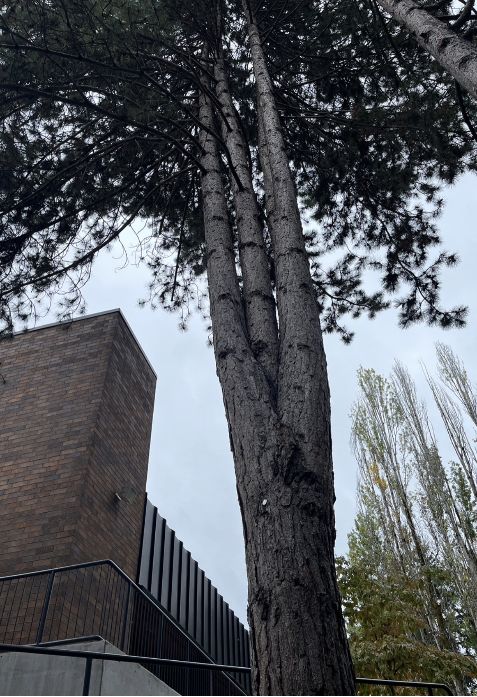

My genius is soccer. I have been playing soccer for about 8 years and have always found enjoyment while playing the sport. When playing soccer I forget about everything and just focus on the game in front of me. I think it is super important to have a hobby which allows you to forget about everything around you. This is one of the few reasons I enjoy soccer. Soccer is a sport which can be played and enjoyed by anyone all around the world. For example the World Cup is a major soccer tournament where countries from around the world come together to celebrate soccer.
I wanted to use a traidic color scheme. I did this by using the darker color to express the emotion of ominous or calm. I used the other two colors to compliment the main color while also adding to the main darker color. The blue color expresses passivity and isolation; and the warmer orange color express the emotions of warmth. Overall, I am trying to elict the emotion of calmness in the webpage viewer as I think that when the colors of my webpage would drag the reader in and make them feel calm while looking at my website.